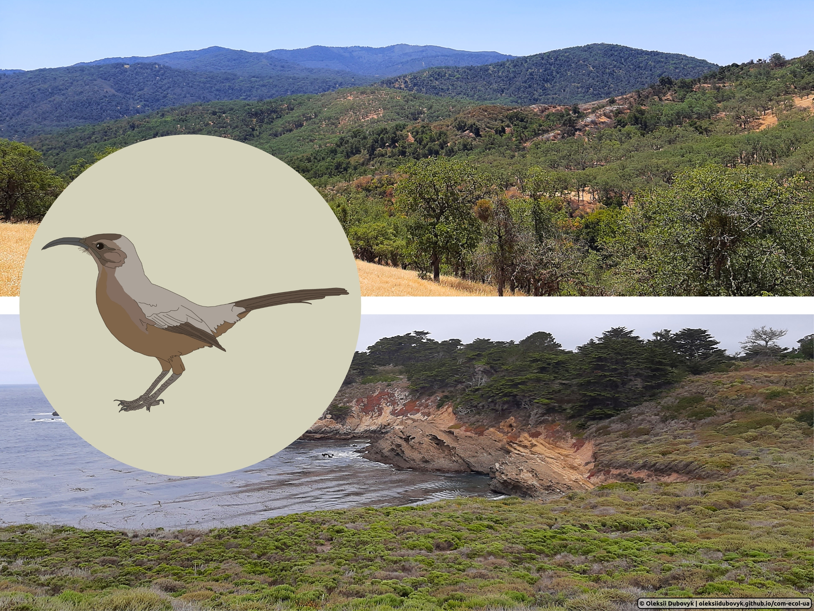
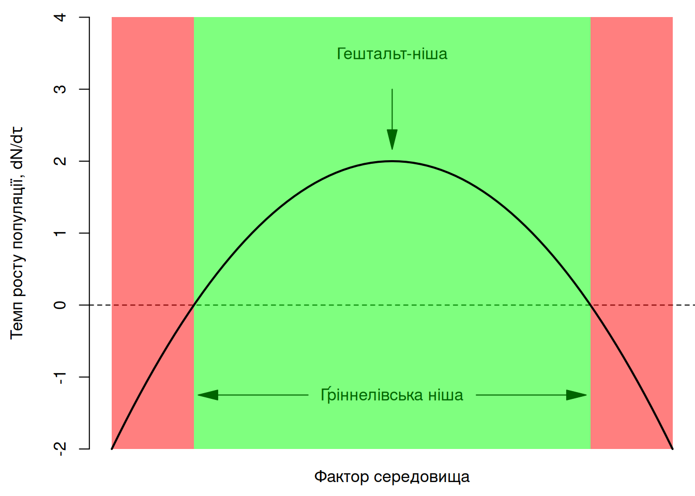
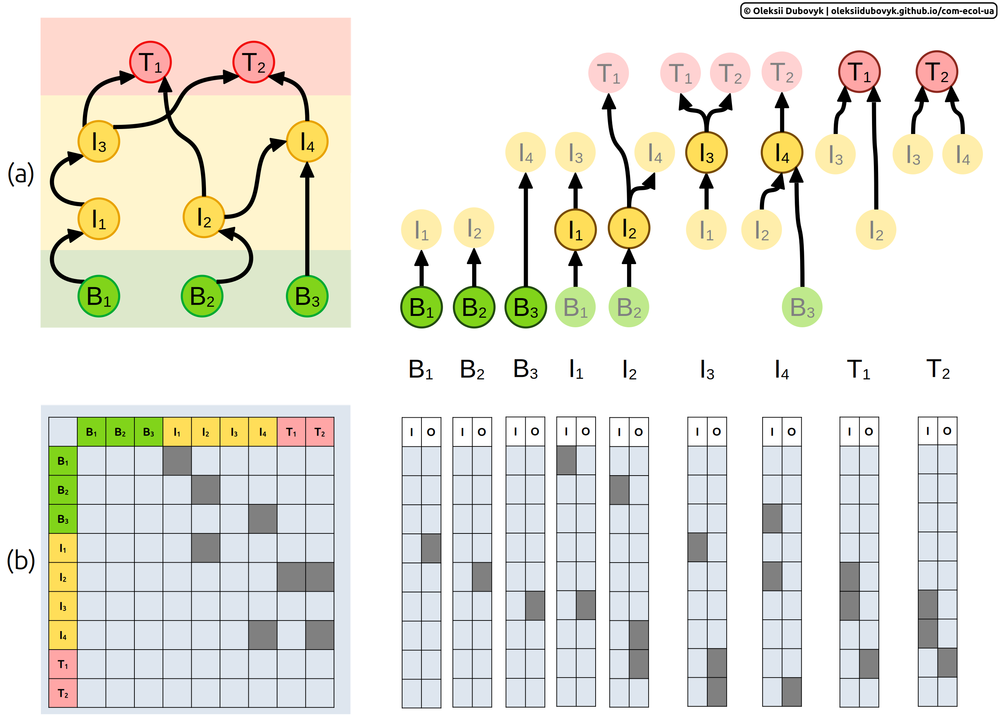
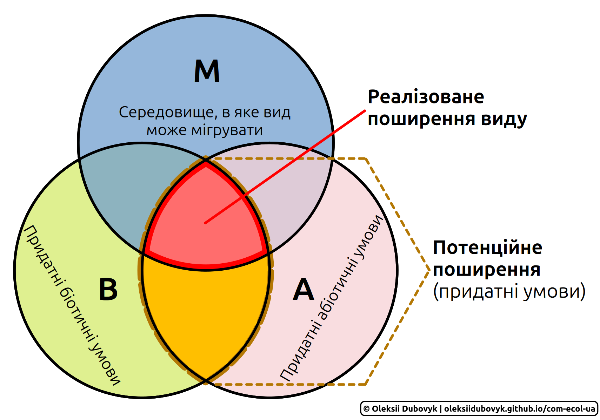
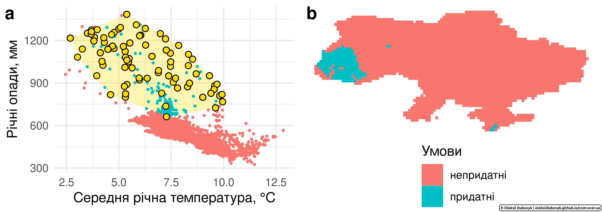

5.2 Екологічна ніша
Таксони не є ідентичними. Звісно, це твердження можна побачити у порівнянні видів і сказати що “види не є ідентичними”, але його можна генералізувати до будь-якого рівня систематики. Для спрощення, давайте поговоримо при види. Таксономи стверджуватимуть, що види мають достатньо різні особливості, і хоча й особини в межах одного виду матимуть певну мінливість таких особливостей (наприклад, морфометричні проміри, забарвлення пір’я, кількість квіток у суцвітті тощо), міжвидова варіація перевищуватиме внутрішньовидову варіацію. Власне, це постулювання дозволяє нам визначити види організмів, а деяким щасливцям – навіть описати нові види. Біологи на додачу ще скажуть, що між видами існуватиме не тільки різниця в зовнішніх ознаках чи фізіології, а й у їх (сюрприз) біології – наприклад, особливостях розмноження, турботи за потомством, способах харчування тощо. Що ж на це скажуть екологи? Як не дивно, види також мають власні екологічні особливості—вимоги до умов середовища, кормової бази, взаємодії з іншими видами тощо—котрі сукупно можна назвати екологічною нішою (niche), своєрідним екологічним портретом виду.
Термін “ніша”, як можна здогадатися, прийшов із архітектури: нішою є виїмка в стіні для, наприклад, статуї, подібно до вихідного уявлення про екологічну нішу як місце виду в середовищі його існування. Вперше в екологічній літературі цей термін використав Розвел Джонсон 1910 року83 у книзі про еволюцію забарвлення жуків-сонечок (Coccinellidae): “Можна очікувати, що різні види в регіоні займатимуть різні ніші середовища; щонайменше, це наслідок сучасного уявлення що кожен вид є настільки поширеним, наскільки він може бути, і чисельність виду обмежена лише доступністю їжі – уявлення, що випливає із виражених мальтузіанських нахилів у вченні Дарвіна” (Johnson 1910, ст. 87). Джонсон не обтяжив себе формальним визначенням його уявлення про “нішу середовища”, тож перше визначення терміну приписують Джозефу Ґріннелу в його роботі 1917 року щодо пристосування окремого виду птахів до середовища існування. Сьогоднішнє розуміння екологічної ніші може бути дещо складно окреслити, адже протягом історії терміну підходи до його формального визначення різнились. В сучасній екологічній літературі, переважно, автори чітко визначають парадигму в якій використано поняття ніші, і нижче можна знайти більше деталей щодо них. В цілому ж, дуже узагальнено, екологічна ніша – це вимоги виду для існування в певному середовищі і його ефекти на це середовище (Chase & Leibold 2003).
5.2.1 Ґріннелівська ніша
У 1917 році було опубліковано статтю Джозефа Ґріннела (Joseph Grinnell) під назвою “Нішові взаємозв’язки тремблера каліфорнійського” (Grinnell 1917). У цьому нарисі Ґріннел аргументував, що обмежене просторове поширення цього співочого птаха Західного узбережжя Північної Америки, Toxostoma redivivum з родини Пересмішникових, можна пояснити його вузькою фізіологічною та поведінковою адаптацією до дуже специфічного типу середовища – так званої чапарелі (chaparral), густих колючих чагарників, типових для південних схилів горбистих ландшафтів Каліфорнії (Рис. 5.7). Зокрема, сірувато-руде забарвлення птаха дозволяє йому переховуватись в густих чагарниках, що особливо помічне зважаючи на полохливу природу тремблерів; тремблери є всеїдними, і в цього виду значна частка раціону складається із жуків, мурах, та насіння, які він здобуває в підстилці під чагарниками; вигнутий дзьоб чудово підходить для викопування комах і розривання підстилки; а кремезні, сильні лапи й короткі округлі крила вказують на перевагу бігу в густих заростях на противагу до польоту між щільними гілками й листям. Відтак, Ґріннел зробив висновок, що поширення тремблера каліфорнійського – це функція його спеціалізації до конкретного типу середовища, і цей вид, зважаючи на його адаптації, наче як частинка пазлу пасує до цього середовища.

Рис. 5.7: Поширення тремблера каліфорнійського (Toxostoma redivivum) обмежене його адаптаціями до існування в конкретному середовищі, чагарниках рослинності типу чапарелі – від узбережжя (Природний заповідник Пойнт Лобос, Каліфорнія) до глибоко в континенті (Природна резервація Хестінгс, Каліфорнія).
В цілому, для всякого виду ґріннелівську нішу (Grinnellian niche) можна визначити як діапазон факторів середовища, необхідний і достатній для виживання виду. Із теорій популяційної динаміки ми знаємо, що перебування виду в середовищі не є тотожним до його стабільного існування, адже темпи росту популяції на певних локаціях можуть бути від’ємними (наприклад, за сценаріїв динаміки за типом “джерела-дірки” чи у випадку екологічної пастки). Відтак, “виживання виду” можна визначити через темпи росту його популяції, і ґріннелівська ніша відповідатиме такій комбінації умов середовища, за якої темп росту популяції не є від’ємним. Ґріннелівський підхід до опису екологічної ніші полягає в спостереженні якомога більшої кількості станів виду в природі аби зробити висновки про відносні ефекти потенційних механізмів, що можуть обмежувати просторове поширення цього виду (James et al. 1984)84. Такий підхід передбачає, що особливості середовища визначають рівні чисельності популяції. Відтак, типовий методологічний підхід в дослідженні ґріннелівської ніші полягатиме в прямому аналізі просторових градієнтів і складатиметься з наступних кроків:
визначенні видоспецифічних вимог до середовища;
визначенні поширення й чисельності виду, їх середніх значень та варіації, й ідентифікації ресурсів, котрі спільні для всіх локацій, на яких спостерігається вид;
визначенні статистично значущих предикторів з числа потенційних ресурсів.
Ідея Ґріннела полягала в тому, що просторові обмеження поширення виду можна зрозуміти із дослідження факторів, котрі різняться за межами поширення: “якщо цей вид тут не трапляється, то що такого особливого щодо цієї локації, що не дозволяє виду тут існувати?” Відтак, екологічний портрет виду можна описати як гештальт-нішу (niche-gestalt) – комбінацію ресурсів, що пов’язані із визначеною конфігурацією структури середовища; таку комбінацію факторів середовища, що дозволяють виду існувати за його найвищої пристосованості (James et al. 2001). Ґріннелівська ніша має багатовимірну природу, адже вона передбачає комбінацію багатьох факторів. Втім, для спрощення, ми можемо уявити ґріннелівську нішу в одновимірному просторі, наприклад, окремого фактора середовища (наприклад, температура чи вологість) або комбінації декількох факторів виражених через головну компоненту. На додачу, ми можемо виразити пристосованість виду через темп росту популяції85. В такому разі, гештальт-ніша відповідатиме таким умовам, за яких ріст популяції найвищий (Рис. 5.8).

Рис. 5.8: Ґріннелівська ніша за віссю окремого фактора середовища, виражена як темп росту популяції.
Ґріннелівська ніша є суто аутекологічним поняттям, тобто таким, що фокусується на одному виді. Ба більше, цей підхід фокусується тільки на односторонньому ефекту середовища на вид. З ґріннелівської точки зору, угруповання є лише комбінаціями видів, чиї трапляння перетинаються в середовищі. Еволюційний компонент обмежений до внутрішньовидової адаптації до умов середовища. Ця концепція повністю ігнорує можливі зворотні ефекти виду на середовище його існування, котре може впливати на інші види, і, відтак, також ігнорує всякі міжвидові взаємодії. Зважаючи на це, не дивно що концепція екологічних ніш отримала значний розвиток поверх ґріннелівських поглядів.
5.2.2 Елтонівська ніша
Пригадайте поняття трофічих мереж: складна система трофічних зв’язків між видами, котрі займають певні трофічні рівні. Подібні мережі не мають обмежуватись трофічними зв’язками: якщо й можна сказати що взаємодії типу хижак-жертва чи господар-паразит є прикладами трофічних зв’язків, то мутуалізм чи коменсалізм в такий термін вже не впишуться. Ми розглянемо різні типи міжвидових взаємодій в наступних розділах, а наразі варто просто мати на увазі, що екологічні мережі можуть включати не лише трофічні зв’язки.
Погляньте на Рис. 5.9, де зображено гіпотетичну екологічну мережу. Пригадайте, що екологічні мережі можуть вказувати не лише на присутність чи відсутність зв’язку між двома видами, а й на їх інтенсивність: наприклад, у випадку формальної трофічної мережі за МакАртуром інтенсивність відповідатиме частці раціону у виді з вищого трофічного рівня, що припадає на певний вид жертви. Одум86 би сказав, натомість, що міжвидові зв’язки варто зважувати за переносом речовини чи енергії між видами. У всякому разі, зверніть увагу що кожен вид матиме різну комбінацію зв’язків із іншими видами. Цей підхід називають елтонівською нішею (Eltonian niche) – опис виду через його зв’язки із іншими видами.

Рис. 5.9: Елтонівська ніша – професія кожного окремого виду в контексті екологічних мереж. Елтонівську нішу кожного окремого виду можна виразити у вигляді графів (a), або ж у вигляді векторів вхідних (I) та вихідних (О) зв’язків із іншими видами (b).
В цілому, поняття елтонівської ніші притаманне поглядам Юджина Одума на екосистеми, адже визначальними в цьому понятті ніші є переніс речовини чи енергії, і сама ніша визначається унікальною87 комбінацією зв’язків із іншими видами. І дійсно, такий погляд на екологічну нішу був активно популяризований Одумом: часто можна зустріти аналогію, що якщо середовище існування виду є його “адресою”, то елтонівська ніша відповідатиме його “професії”. Однак, чому тоді ця ніша називається елтонівською, а не одумівською?
Як і ґріннелівська чи гатчінсонівська ніша, “елтонівська” є похідним від імені дослідника, а саме Чарльза Елтона (Charles Elton). Елтон був одним із основоположників екології (чи, в його часи, радше, натуральної історії та історії життя) тварин. 1927 року Елтон видав підручник “Екологія Тварин”, в якій згадав приклад двох видів носорогів: білого (Ceratotherium simum) та чорного (Diceros bicornis). Назви цих носорогів (як воно часто буває) мало відповідають їх забарвленню, вони обидва сірі. Існує легенда, що свого часу британські колонізатори Африки недочули нідерландсько-африкаанське слово “wijd” (“широкий”), котрим позначали квадратну форму губ Ceratotherium simum, і вирішили що ранішні поселенці мали на увазі “white” (“білий”). Етимологія назв носорогів має мало нас цікавити для розуміння екологічних ніш, але щось в тому є: носоріг білий має широкі губи, котрі можна використовувати для випасання, в той час як загострені губи носорога чорного дозволяють йому харчуватись листям з колючих гілок чагарників. Відтак, Елтон зробив висновок про різні екологічні ніші цих двох видів на підставі їх позиції в трофічній мережі.
Сьогодні, поняття елтонівської ніші є найбільш релевантних в дослідженні екологічних мереж (D. Matthias et al. 2025) – переважно, трофічних, але, знову ж, поняття можна використовувати не тільки для трофічних зв’язків. Ми повернемось до елтонівського погляду на нішу і його ролі в ідентифікації ключових видів в екосистемах (Jordán 2009). Врешті, “професію” видів і їх зв’язки із іншими видами в екосистемі можна застосувати для опису їх функціональних ролей, а, відтак, і для оцінки функціонального різноманіття в екосистемах й угрупованнях (Dehling & Stouffer 2018).
5.2.3 Гатчінсонівська ніша
1957 року на базі Лабораторії Колд Спрінг Харбор в штаті Нью-Йорк відбувся черговий симпозіум з матемаматичної біології (Cold Spring Harbor Symposium on Quantitative Biology). Того року, тема симпозіуму фокусувалась на екології та демографії тварин, і зібрала чимало науковців, із якими ми вже маємо бути знайомі: Андерварту та Бірча, Добжанського, Хейрстона, Слободкіна, Левінза, Левонтіна, Майра, Пітелку88, та ще зі 120 людей. Загалом, зібрався цвіт екологічної нації. Під закінчення цієї події, такий собі Дж. Евелін Ганчінсон—наставник МакАртура, Говарда Одума89, та того ж Ловренза Слободкіна—вирішив підбити підсумки у промові, котру згодом було опубліковано (1953). Мабуть, симпозіум минув дуже продуктивно, бо промова Гатчінсона в друці зайняла 13 сторінок.
Підсумки Гатчинсона охопили чимало теоретичних тем, котрих торкнувся симпозіум: кривих росту популяції й узагальнення демографічних процесів, впливи зовнішніх чинників і збурень на стабільність популяцій. Дуже швидко Гатчінсон перейшов до конкурентного виключення й рівняння Лотки-Вольтерри, котре описує динаміку двох пов’язаних популяцій і які ми розглянемо в подальших розділах. На думку Гатчінсона, для адекватної генералізації динаміки популяцій різних видів, екологія вимагала формального математичного визначення ніші, і великий шматок есею припадав на власне таке визначення ніші, яке ми сьогодні називаємо Гатчінсонівською нішею (Hutchinsonian niche).
Найпростіше визначення гатчінсонівської ніші – це \(n\)-вимірний гіпероб’єм у просторі факторів середовища, за яких вид може існувати. Мабуть, це звучить доволі складно, але всякий випадок багатовимірності можна часто спростити у приклад двох- чи трьох-вимірного простору. Наприклад, якщо ми приймаємо до уваги тільки два фактори—скажімо, температуру й вологість—то \(n=2\) і “гіпероб’єм” стає двовимірним прямокутником. Які межі цього прямокутника? Подібно до ґріннелівської ніші, їх можна визначити як такі умови за віссю фактора середовища, за яких приріст популяції є позитивним. Наприклад, кажуть, що для пшениці Triticum aestivum оптимальною температурою є 12–25°С, але вона цілком виживає між 4°С і 37°С. Відтак, за віссю температури ґріннелівський \(n\)-вимірний гіпероб’єм обмежуватиметься значеннями 4°С і 37°С. Як щодо іншої осі—вологості—в якості проксі для якої можна використати річні опади? В Інтернетах кажуть, що пшениця зростатиме в умовах із від 250 до 1750 мм річних опадів із оптимумом між 375 і 975 мм. Отже, двовимірна ґріннелівська ніша обмежиться координатами \((250, 1750)\) за віссю опадів (Рис. 5.10-a).
![Гатчінсонівська ніша визначається як $n$-вимірний гіпероб'єм у просторі факторів середовища, за яких вид може існувати. У цьому випадку, $n=2$ і осями таких факторів середовища є температура та кількість річних опадів. Ніші двох видів---пшениці й рису---перетинаються в такому гіперпросторі, й відтак можуть конкурувати за умов, що сприятливі для обох видів. В такому випадку можна очікувати що один вид переможе інший в конкуренції, що зменшить об'єм фундаментальної ніші до її реалізованого вигляду.](bookdown-demo_files/figure-html/fig-hutchinson-1.png)
Рис. 5.10: Гатчінсонівська ніша визначається як \(n\)-вимірний гіпероб’єм у просторі факторів середовища, за яких вид може існувати. У цьому випадку, \(n=2\) і осями таких факторів середовища є температура та кількість річних опадів. Ніші двох видів—пшениці й рису—перетинаються в такому гіперпросторі, й відтак можуть конкурувати за умов, що сприятливі для обох видів. В такому випадку можна очікувати що один вид переможе інший в конкуренції, що зменшить об’єм фундаментальної ніші до її реалізованого вигляду.
Такий об’єм комбінації \(n\) умов середовища, за яких вид може існувати, Гатчінсон назвав фундаментальною нішою (fundamental niche). Якщо помістити ізольовану особину виду в будь-яку точку фундаментальної ніші, цей вид має вижити. Однак, в природі все не завжди так оптимістично, адже існують інші види для яких ця ж комбінація умов середовища є навіть більш оптимальною (тобто вони ближчі до гештальт-ніші в ґріннелівському сенсі). Відтак, периферія фундаментальної ніші виду, ймовірно, перетинатиметься із фундаментальними нішами інших видів. За принципом конкуретного виключення два види із ідентичними вимогами до середовища не можуть співіснувати, тому такі зони перетину можуть підтримувати тільки один вид. Отже, реалізована ніша (realized niche) матиме менший об’єм за фундаментальну нішу завдяки конкуренції та іншим взаємодіям із іншими видами (наприклад, рис на Рис. 5.10-b). Реалізована ніша залежить від контексту існування фокального виду, адже різні локації мають різні види і перетин фундаментальних ніш може виглядати дуже по-різному.
Формальне математичне визначення екологічної ніші дало чималий поштовх розвитку екології, особливо теорії ніш та теорії співіснування. Ідея експериментального опису темпів росту популяції у просторі декількох факторів середовища була не новизною; наприклад, Бірч за декілька років до симпозіуму в Колд Спрінг Харбор опублікував статтю, в якій прослідкував темпи росту популяції двох видів жуків як функцію температури і вологості (Birch 1953). Однак, Гатчінсон зачепив важливий момент обмежень фундаментальної ніші, котрі зменшують її розмір до реалізованої – і в той час як сам Гатчінсон вбачав міжвидову конкуренцію як основний ліміт, подальший розвиток його ідей включив інші важливі моменти на кшталт міграційних бар’єрів, демографічної стохастичності, та різних ефектів популяційної динаміки (Holt 2009).
5.2.4 BAM-ніша
Фактори середовища можуть мати дуже широкий розмах значень в межах значних географічних територій, і цей розмах часто є більшим від оптимальних умов середовища для певного виду. Вимоги виду займають лише підмножину можливих умов середовища. Середовище існування (або не-існування) виду можна уявити як в географічному просторі (класично, із вимірами широти та довготи), так і в просторі факторів середовища – часто багатовимірному, де окремі виміри відповідають окремим факторам середовища (Рис. 5.11).
 (a--b), на значній площі є лише точками даних із географічними координатами (c--d). Спостереження виду на географічних точках, як-то саламандри плямистої *Salamandra salamandra* (e) дозволяють оцінити комбінації факторів середовища на придатних локаціях, а відтак перекласти трапляння із географічного простору в простір умов середовища (f): жовті точки відповідають умовам середовища на таких локаціях, де користувачі [iNaturalist](https://www.inaturalist.org/) зареєстрували саламандру плямисту, в той час як чорні -- всім можливим умовам середовища на території України. Жовта площа на (f) дозволяє приблизно оцінити фундаментальну нішу виду, однак зверніть увагу що не всі локації із придатними умовами зайняті видом.](images/bam1.png)
Рис. 5.11: Умови середовища існування, такі як середня температура та опади із набору даних WorldClim 2.1 (a–b), на значній площі є лише точками даних із географічними координатами (c–d). Спостереження виду на географічних точках, як-то саламандри плямистої Salamandra salamandra (e) дозволяють оцінити комбінації факторів середовища на придатних локаціях, а відтак перекласти трапляння із географічного простору в простір умов середовища (f): жовті точки відповідають умовам середовища на таких локаціях, де користувачі iNaturalist зареєстрували саламандру плямисту, в той час як чорні – всім можливим умовам середовища на території України. Жовта площа на (f) дозволяє приблизно оцінити фундаментальну нішу виду, однак зверніть увагу що не всі локації із придатними умовами зайняті видом.
Якщо географічний простір можна уявити як класичні комбінації широти й довготи, то що таке середовищний простір (environmental space)? Насправді, між ними не так складно прослідкувати зв’язок. Будь-яка локація має певні умови значення умов середовища, які можна виміряти: передусім, кліматичні показники на кшталт температури чи вологості, але такими умовами середовища може виступати будь-яка змінна на вибір дослідника. Вимірювання змінних принесе досліднику геотегованих набір даних, в якому кожне спостереження матиме географічні координати і вимірювання факторів середовища. Наприклад, на Рис. 5.11-a–b ми розглядаємо двійко факторів середовища—середню річну температуру й річні опади—в географічному просторі адміністративних меж України; а на Рис. 5.11-c–d ми вже маємо хмару точок зі змінними (1) широта, (2) довгота, (3) середня річна температура, і (4) річні опади, які ми все ще розглядаємо в системі координат географічного простору. А от на Рис. 5.11-f ми маємо ту ж хмару точок, тільки в системі координат факторів середовища – що ми і назвемо середовищним простором. До речі, розгляд лише двох факторів є лише спрощенням, і зазвичай варто розглянути більше, у випадку чого ви матимете справу із багатовимірним середовищним простором.
Коли перетнути середовищний простір регіону із локаціями спостережень виду (на Рис. 5.11 ним виступає саламандра плямиста Salamandra salamandra), це дозволяє нам поглянути на фундаментальну ґріннелівську нішу цього виду (Soberón & Peterson 2020). Наприклад, ми можемо намалювати опуклу оболонку (convex hull)90 навколо периферійних точок аби оцінити підмножину середовищного простору, придатну для існування виду. Ми бачимо, що саламандра плямиста надає перевагу вологим й прохолодним локаціям, які не надто поширені в Україні (переважна більшість точок знаходяться під опадами приблизно в 700 мм на рік). Однак навіть в межах фундаментальної ніші не всі точки є зайнятими. Чому так? Здавалось би, вони є цілком придатними. Однією із причин може бути неідеальна детекція: ми не можемо припускати що в усіх точках України було зібрано дані щодо присутності саламандри плямистої, і ми обмежені до тих спостережень, котрі були подані учасниками iNaturalist. І навіть якщо волонтери-натуралісти відвідували локації, на яких трапляється саламандра, її могли просто не помітити. На додачу до того, придатні умови середовища для виду не тотожні існуванню виду. Наприклад, Кримські гори є холодними й вологими подібно до Карпат, однак саламандри там нема. Саламандрі необхідно прочалапати добрячу відстань від Карпат до Криму сухими теплими українськими лісами та степами, аби заселити ці, на перший погляд, придатні ділянки.
Власне, міграційна ізоляція отримала чималий інтерес в розвитку теорії ніш Соберона та Петерсона, про що вони зі співавторами описали в монографії “Екологічні ніші та географічне поширення” (2011). На їх думку, трапляння виду на локації – це ієрархічний процес. Потенційне поширення видам відповідає таким локаціям, на яких (A) існують сприятливі абіотичні умови (класична ґріннелівська або фундаментальна гатчінсонівська ніша) і (B) біотичні взаємодії не спричинятимуть конкурентному виключенню виду (реалізована гатчінсонівська ніша). Однак не всі потенційно придатні локації будуть заселеними, адже для заселення вони повинні бути доступними для імміграції такої стадії життєвого циклу виду, що відповідає за дисперсію. На шляху заселеності можуть ставати географічні бар’єри на кшталт гір, річок, або просто великих площ непридатного для виду середовища на кшталт сухих степів для саламандри. Міграція є фінальним компонентом (M) в уявленні про BAM-нішу (Peterson 2011), котра може допомогти знайти не стільки географічне поширення потенційно придатного середовища, а власне реалізоване поширення виду (Рис. 5.12).

Рис. 5.12: Реалізоване поширення виду в концепції BAM-ніші відповідає таким локаціям, на яких існують придатні (A) абіотичні та (B) біотичні умови, а також до яких вид може вільно (М) мігрувати (за Peterson 2011).
Концепція ВАМ-ніші дала поштовх прикладному застосуванню теорії ніш в екології, а саме моделюванню географічного поширення видів та передбаченню щодо інвазійності. Оскільки на Рис. 5.11 ми змогли легко здійснити перехід між географічним й середовищним простором, ніщо не заважає нам зробити ідентичний перехід в протилежному напрямку – від середовищного до географічного. Згідно із теорією ВАМ-ніші, всі чорні точки в межах жовтого полігона на Рис. 5.11-f відповідають абіотично придатному середовищу. Тож якщо припустити, що на всіх цих локаціях не існуватиме сильних видів-конкурентів (біотична компонента), то можна очікувати що штучне внесення виду (що тотожно перетину географічного бар’єру) на такі локації має хороші шанси на успішну інтродукцію.
5.2.5 Просторове моделювання ніш
Коли мова заходить за моделювання ніш видів, в більшості видів йдеться про просторове моделювання, або ж моделювання поширення видів (species distribution modeling, SDM). Логіка цього підходу доволі проста: якщо ми можемо статистично проаналізувати умови середовища, в яких трапляється вид, то можна зробити висновок щодо географічного поширення придатних умов і, відтак, самого виду. Наприклад, у випадку із саламандрою із Рис. 5.11 можна підглянути, де на території України можна знайти такі комбінації температури і вологості, котрим надає перевагу цей вид (Рис. 5.13).

Рис. 5.13: Географічне поширення територією України середньої річної температури та річних опадів, котрі відповідають фундаментальній ніші саламандри плямистої Salamandra salamandra.
Звісно, в реальності цей підхід би зважав на набагато більше вимірів абіотичних чинників та мав би солідну оцінку невизначеності. Зокрема, ми змогли намалювати якусь мапу, але чи можемо ми оцінити наскільки їй можна вірити? Для цього й існують складніші методи моделювання поширення видів.
Під капотом таких методів, втім, лежить доволі просте статистичне питання: чи можна трапляння/відсутність виду змоделювати як функцію абіотичних чинників? Тут ми торкаємось причини, із якої дані з Рис. 5.11 та 5.13 не дуже добре підходять для моделювання поширення. В ідеалі, ми маємо справу із логістичною регресією де залежною змінною є бінарна відповідь на питання “чи на цій локації можна знайти цей вид?”, однак дані із iNaturalist можуть тільки сказати “на цій локації є цей вид”. Як щодо того, де його нема? Цього ми вже сказати не можемо, адже відсутність даних може вказувати як на відсутність виду, так і на відсутність спостережників які цей вид могли би спостерігати. Для точної оцінки поширення виду необхідно мати не тільки інформацію про його спостереження, а й про зусилля вибірки (sampling effort) – де і коли цей вид намагалися спостерігати.
Звісно, з цього питання можна трохи похитрувати. Наприклад, розкинути випадкові точки регіоном і сказати “ось тут ми припускаємо, що цього виду нема”. Або подивитись на певні проксі зусилля вибірки: наприклад, сумарну кількість спостережень всіх видів з iNaturalist. В такому випадку, наприклад, якщо із міста Києва до бази даних надійшло 300 тисяч спостережень рослин, тварин, і грибів, і жодне з них не є спостереженням саламандри плямистої, то можна зважено припустити що в Києві саламандри плямистої нема.
Отже, моделювання поширення видів впирається в якість доступних даних. Протоколи отримання сирих даних щодо поширення видів і біорізноманіття можна розділити на наступні групи (Kelling et al. 2011):
структуровані (structured): такі, де існує чіткий, часто видоспецифічний, протокол пошуку виду із певними вимогами до умов збирання даних (наприклад, часу року чи часу доби, погодних умов тощо). Прикладом структурованого протоколу може бути програма моніторингу лелеки чорного Ciconia nigra, що полягає в пошуку гнізд цього виду і їх моніторингу за допомогою фотопасток. В цілому, всякі дослідження протокол яких зважує біологію виду (наприклад, пошук сов вночі за допомогою програвання записів співу сов того ж виду – метод playback) скоріш за все будуть структурованими. Ключовим моментом в структурованих протоколів є отримання і збереження даних щодо зусилля вибірки: навіть якщо цільовий вид не знайдено протягом одної події, дані щодо того коли, де, і як ви намагалися цей вид знайти в жодному разі не варто викидати. Такі дані кажуть нам, що “ми шукали і знайшли або не знайшли”.
напівструктуровані (semistructured): такі, де спостережники мають свободу вибору часу й місця спостережень, однак від них вимагаються додаткові дані, котрі дозволяють оцінити зусилля вибірки. Чудовим прикладом цього підходу є платформа для збору спостережень птахів eBird: окрім спостереженої кількості птахів різних видів, спостерігач повинен повідомити де і коли були зібрані дані, скільки часу тривало спостереження, і який тип спостереження це було (наприклад, стаціонарне, подорож, чи випадкове спостереження), а також чи спостереження є повним – тобто чи спостерігач вносить всі види, котрі були помічені протягом спостереження. Коли повне спостереження не містить певного виду, користувач даних може виправдано припустити що цього виду не було на певній локації в певний час, а отже можна отримати дані щодо відсутності виду. Такі дані кажуть нам, що “ми шукали і знайшли або не шукали і не знайшли”.
неструктуровані (unstructured): такі, де користувачі можуть повідомляти про присутність виду із мінімальними метаданими (час та місце спостереження). Прикладом такого підходу є iNaturalist: ви можете сфотографувати будь-яку квіточку під вашим будинком і подати це як спостереження, і хтось із учасників платформи навіть перевірить правильність вашого визначення, але від вас не вимагається задекларувати скільки часу і за яким протоколом ви намагалися цю квіточку знайти. Відтак, дослідник що використовуватиме такі спостереження зможе лише зробити висновок щодо присутності виду, але не його відсутності. Такі дані кажуть нам, що “ми не шукали але знайшли”.
Отже, як можна моделювати поширення виду із його ніші? Загалом, це питання має справу із загальною моделлю вигляду
\[\psi(\mathbf{G}) \sim \mathbf{E(\mathbf{G})}\] де \(\psi\) відповідає присутності виду (\(\psi = 1\) коли вид присутній на локації \(\mathbf{G}\) та \(\psi = 0\) коли вид відсутній), а \(\mathbf{E}\) відповідає вектору \(n\) факторів середовища, що описують умови середовища на локації \(\mathbf{G}\). Вибір методу моделювання є відповідальністю дослідника: це може бути логістична генералізована лінійна регресія (GLM), адитивна лінійна регресія (GAM) із біномільним розподілом залежної змінної, або складніші методи на кшталт регресійних дерев (regression trees) чи рандомних лісів (random forest, RF). Варто зауважити, що різні методи матимуть різні передбачення і, ймовірно, вимагатимуть різного ступеня довіри до результатів (Lippi et al. 2020). Нарешті, мабуть, найбільш популярним і зовсім не простим методом є метод максимальної ентропії (MAXimum ENTropy, MaxEnt).
MaxEnt є алгоритмом який було спеціально розроблено для роботи із даними щодо лише присутності (presence-only data). Цей алгоритм намагається оцінити площину ймовірності присутності виду як функцію факторів середовища із мінімізацією потенційних припущень (які не варто робити через відсутність даних щодо відсутності, presence/absence data) – тобто максимізацією ентропії (Phillips et al. 2004). Алгоритм MaxEnt починається з того, що користувач задає дані із присутності виду (як на Рис. 5.11-e) та просторові растри середовищних предикторів (як на Рис. 5.11-a–b); це дає алгоритму змогу оцінити площину ймовірності присутності виду в середовищному просторі (\(f_1(\cdot)\)). На додачу до того, алгоритм генерує довільну вибірку фонових точок (наприклад, 10 тисяч) в межах площі доступних растрів і відтак генерує фоновий середовищний простір (\(f(\cdot)\)). Варто зауважити, що фоновий простір не відповідає відсутності виду – ми з самого початку визнаємо що площина ймовірності присутності виду може перетинатись із фоном. Фоновий простір і простір присутності можуть моделюватись як всякі функції середовищних предикторів – як лінійна модель, як квадратична залежність, як взаємодія декількох предикторів тощо. Якщо для певних умов середовища \(\mathbf{E}\) можна передбачити ймовірність присутності виду \(f_1(\mathbf{E})\) та фонову присутність \(f(\mathbf{E})\), то MaxEnt зважає на відношення \(f_1(\mathbf{E})/f(\mathbf{E})\) і намагається підібрати таку комбінацію важливості середовщних предикторів, котра дозволяє виокремити умови середовища відмінні від фонових і найбільш придатні для існування виду (Elith et al. 2010.
Мабуть, найцікавішим застосуванням моделей поширення видів є прогноз щодо майбутніх змін. Оскільки в якості середовищних предикторів часто виступають кліматичні змінні, а кліматологи мають широкий арсенал просторових датасетів щодо кліматичних умов в наступні сторіччя за різних сценаріїв зміни клімату, ніщо не заважає замінити растри сьогоденних факторів середовища на прогнозовані растри. Звісно, варто мати на увазі що SDM не робить висновки лише із асоціацій між траплянням виду і середовищними коваріатами, при чому повністю ігнорує можливість трапляння виду в непридатних локаціях за сценарію джерела-дірки та інші особливості динаміки популяцій; це натякає на значну потенційну неточність в результатах моделювання ніш і виключну важливість зваженого вибору вхідних даних. Втім, оцінка змін поширення видів за глобальних змін клімату—так зване відслідковування ніш (niche tracking), коли поширення виду зміщується в часі аби відповідати змінам в локаціях найсприятливіших умов середовища (наприклад, коли вид субальпійських лук стає траплятись на більших висотах внаслідок потепління)—залишається одним із найбільш популярних напрямів в застосуванні моделювання ніш (Franklin 2023).
Втім, ідея ніші існувала й до першого використання цього слова: наприклад, в роботах Дарвіна можна прослідкувати ідею про “лінію життя” (line of life) видів як аналогію до виразу “line of work” – сфери діяльності людей; звісно, і Дарвін не був першим, адже ідея про дику природу, в якій кожне живе створіння має власне місце в гармонії із іншими, сягає, радше, древніх філософських систем (Pocheville 2015).↩︎
Франціс Джеймс (Frances C. James) – наукова керівниця мого наукового керівника, Еріка Волтерза (Eric L. Walters). Водночас, керівник постдоку мого керівника, Волтер Кьоніг (Walter Koenig)—доволі цікавий чолов’яга, що навіть на пенсії досі займається дятлом жолудевим в Природній резервації Хестінгс в Каліфорнії,—походить із лабораторії Франка Пітелки (Frank Pitelka) в Університеті Каліфорнії в Берклі, із тієї ж лабораторії, яку заснував ніхто інший як Джозеф Ґріннел!↩︎
В принципі, пристосованість (fitness) особини як її репродуктивний потенціал (або вклад до генофонду популяції) і темп росту популяції (popluaton growth rate) є пов’язаними поняттями, однак оперують на різних рівнях (особин і популяцій). Популяція особин із високою пристосованістю матиме високий темп росту.↩︎
Юджин Одум—Eugene P. Odum—один із найбільш значущих постатей у становленні екології як науки, адже його наукова кар’єра припала на відокремлення екології від біології як самостійної дисципліни. Мабуть, це ім’я найбільш відоме завдяки підручнику “Початки Екології” (1953), котрий Юджин написав у співавторстві зі своїм молодшим братом Говардом (Howard T. Odum ) – ба більше, цей підручник навіть переклали і видали в совєтському союзі 1975-го року. Цей підручник охопив поняття екосистеми та цикли речовин й енергії в екосистемі, торкнувся динаміки екосистем, ландшафтної екології, та глобальних процесів. Доробок Юджина Одума стосувався потоків енергії між трофічними рівнями в екосистемі, динаміки екосистем, та впливів збурень на енергетику, цикли елементів й поживних речовин (nutrient cycling), продуктивність, та функціонування екосистем. Водночас, Говард Одум цікавився більш метафізичними питаннями щодо самоорганізації складних систем та енергетичного балансу. В цілому, школа Одумів характеризується фокусом на процесах екосистемного рівня – переважно, потоків речовин та енергії.↩︎
Втім, не обов’язково унікальною – можна уявити ситуацію, коли два види матимуть ідентичні комбінації зв’язків в екологічній мережі.↩︎
H.G. Anderwartha & L.C. Birch – аргумент щодо щільність-незалежної динаміки популяцій; Th. Dobrzhansky – роздуми щодо поняття виду; Nelson G. Hairston & Lawrence Slobodkin – гіпотеза зеленого світу, або HSS; Richard Lewins – теорія метапопуляцій; R.C. Lewontin – варіація генетичного різноманіття; Ernst Mayr – автор біологічної концепції виду; Frank Pitelka – керівник керівника мого керівника і представник школи Ґріннела↩︎
Robert MacArthur – наразі ми його згадували лише в контексті стабільності трофічних мереж, однак ми побачимо ще більше його вкладу в розвиток теорії диференціації ніш, теорії острівної біогеографії, і моделі розподілів чисельності; Howard T. Odum – брат Юджина Одума і співавтор підручника з екології, що популяризував елтонівську нішу.↩︎
Альтернативою опуклій оболонці може бути малювання довірчих еліпсів (confidence ellipse).↩︎